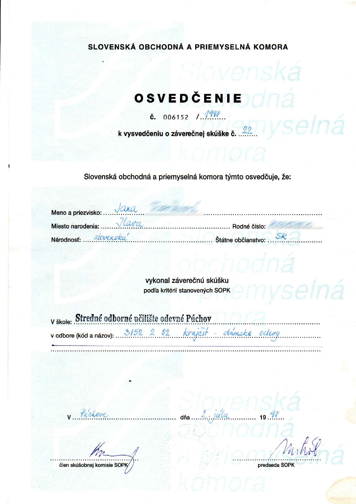

Vítame Vás v našej krajčírskej firme!
Sme skupina vášnivých remeselníkov so silnou väzbou na tradície šitia a zároveň neustále sledujeme nové trendy a technológie, aby sme vám mohli poskytnúť kvalitné služby v dnešnom rýchlo sa meniacom svete módy.
Každý z naších pracovníkov má vyštudovanú minimálne strednú školu, zapojil sa do rôznych súťažií ako napr.:
Naším cieľom je spokojnosť zákazníka a preto sa snažíme každý kus práce dotiahnuť do dokonalosti. Sme presvedčení, že každý kúsok šiat by mal byť nielen štýlový, ale aj pohodlný a odolný.
Postup
S radosťou vám poskytneme poradenstvo a pomôžeme vybrať tú správnu látku a štýl podľa vašich potrieb a predstáv. Veríme, že spoločne vytvoríme dielo, ktoré vám bude slúžiť a potešiť mnoho rokov.
Tešíme sa na spoluprácu s vami!